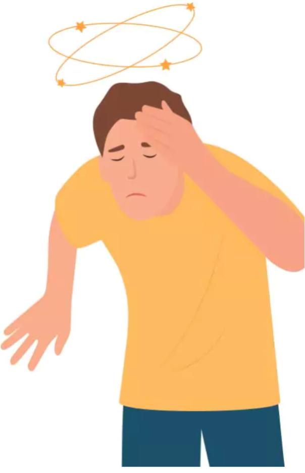
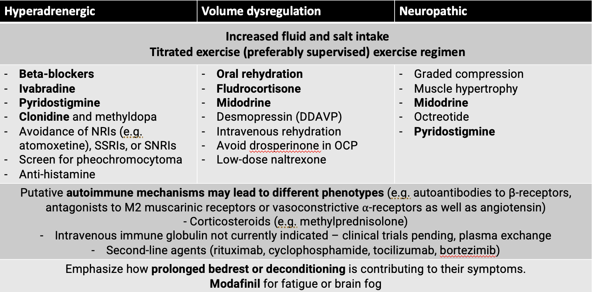

Case Presentation: Postural Orthostatic Tachycardia Syndrome (POTS)
Clinical History

Presenting Complaint
- 16-year-old girl with dizziness, palpitations, and fatigue, especially upon standing.
History of Present Illness
- Symptoms began six months ago, progressively worsening.
- Increased dizziness and palpitations in the morning.
- Fatigue most days, affecting focus in school.
- Near-syncope episodes without loss of consciousness.
- Episodes last from seconds to minutes, relieved by lying down.
Past Medical History
- History of anxiety, no other significant medical conditions.
- No syncope, seizure, or head trauma.
Family History
- Mother has migraines; sibling with anxiety.
Review of Systems
- Denies chest pain, shortness of breath, or visual changes.
- Reports occasional abdominal discomfort and constipation.
Physical Examination
Vital Signs
- Supine Vital Signs: HR 78 bpm, BP 110/70 mmHg
- Standing (after 10 min): HR 130 bpm, BP 108/68 mmHg
- Heart rate increase > 40 bpm from supine to standing.
Physical Findings
- Normal cardiac and respiratory exam.
- Neurological exam is normal.
- Skin: mildly cool extremities, no rash.
Illustrative Questions and Answers
Question 1: Most Likely Diagnosis?
- Answer: Postural Orthostatic Tachycardia Syndrome (POTS)
- Characterized by heart rate increase upon standing without significant hypotension.
- Common symptoms include dizziness, fatigue, and palpitations.
Question 2: Diagnostic Criteria for POTS
- Heart rate increase: ≥30 bpm (or ≥40 bpm in adolescents) within 10 minutes of standing.
- Symptoms: Lasting ≥6 months.
- Exclusion of other causes: Rule out dehydration, medications, etc.
Question 3: Initial Diagnostic Tests
- Orthostatic Vital Signs
- Head-Up Tilt Test (HUTT)
- Blood Tests: Rule out anemia, electrolyte imbalances, thyroid dysfunction.
- ECG: Rule out arrhythmias or structural abnormalities.
Question 4: Role of Head-Up Tilt Test (HUTT)
- Answer: Confirms diagnosis by showing HR increase without BP drop when tilted to 60–70 degrees.
Question 5: Common Comorbid Conditions with POTS
- Anxiety, migraines, irritable bowel syndrome (IBS), chronic fatigue syndrome.
- Recognizing comorbidities aids holistic management.
Question 6: Non-Pharmacologic Management
- Hydration and salt: 2–3 liters of fluid and salt supplementation.
- Physical reconditioning: Lower body strengthening exercises.
- Compression garments: Supports venous return.
- Small, frequent meals: Prevents postprandial symptoms.
- Sleep hygiene and stress management.
Question 7: Pharmacologic Management
- Consider if significant symptoms persist.
- Beta-blockers (e.g., propranolol) for tachycardia.
- Midodrine for vasoconstriction support.
- Fludrocortisone for volume expansion.
- SSRIs/SNRIs for anxiety or dysautonomia symptoms.
Management

Question 8: Prognosis for Adolescents with POTS
- Many improve with non-pharmacologic interventions.
- Some experience symptom reduction or resolution by adulthood.
Summary Points for Teaching
- POTS is a form of orthostatic intolerance with a hallmark HR increase upon standing.
- More common in adolescents, particularly females.
- Emphasis on hydration, salt intake, physical reconditioning, and adjunct medications if needed.
- Educate on avoiding prolonged standing and rapid positional changes.
Social History